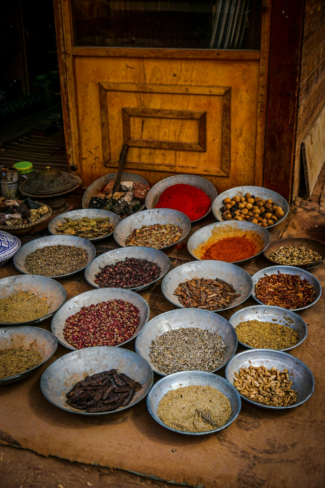

The story of ginger is the chronicle of human exploration, global trade, and culinary fascination. For over four thousand years, since its earliest mention in ancient Sanskrit Ayurvedic treatises and Confucius’s philosophical writings in China, the fragrant rhizome of *Zingiber officinale* has traveled across maritime spice routes, royal banquet halls, and apothecaries.
In medieval Europe, ginger was so precious that a single pound of dried root was valued equivalently to a live sheep, taxed by royal treasuries and locked inside iron spice chests by guild masters. At Ginger Meal Max, our Manhattan atelier stands as a proud guardian of this five-millennium spice lineage. In this historical treatise, our culinary historians trace the journey of ginger from ancient maritime fleets to modern fine dining salons.
1. The Ancient Genesis: Vedic India and Confucian Banquets
How early Asian civilizations revered the root of life:
- Ayurvedic Maha-Aushadhi (The Great Remedy): In 1500 BC, Indian physicians categorized fresh ginger (*Adraka*) and dried ginger (*Sunthi*) as supreme digestive harmonizers.
- Confucius and Royal Chinese Dynasties: The philosopher Confucius (551–479 BC) wrote that he never partook in a meal without fresh ginger, recognizing its power to clear the mind and aid digestion.
- The Han Dynasty Terracotta Spice Pots: Tomb excavations in Changsha reveal sealed earthenware jars containing preserved ginger rhizomes buried alongside emperors.
“Ginger is the ancient traveler of the spice winds, carrying the fragrance of tropical earth across empires, oceans, and millennia.”
2. The Roman Empire and the Silk Road Spiceries (100 BC–400 AD)
How ginger entered Western culinary civilization:
- Alexandrian Maritime Tariffs: Roman merchant fleets sailed monsoon winds from the Red Sea to India’s Malabar coast, returning with ginger taxed heavily under Roman maritime law.
- Apicius’s Imperial Banquets: The famous 1st-century Roman cookbook *De Re Coquinaria* features dozens of ginger-infused sauces paired with roast wild boar and flamingo.
- The Dark Ages Survival: Following the fall of Rome, ginger cultivation was preserved in Mediterranean monastery gardens by Benedictine herbalists.
3. Medieval European Pepperer Guilds and Royal Gingerbreads
How ginger became the ultimate status symbol of Renaissance royalty:
By the 14th century, the Worshipful Company of Grocers in London regulated ginger trade, while royal pastry chefs crafted gilded gingerbread sculptures for the feasts of King Henry VIII and Queen Elizabeth I.
4. Historical Ginger Epochs Comparison Matrix
| Historical Epoch | Primary Trade & Sourcing Route | Dominant Culinary Preparation | Cultural & Economic Value |
|---|---|---|---|
| Ancient India & China (1500 BC–200 AD) | Domestic Monastic & River Cultivation | Raw Slices, Salt Ferments, Broths | Sacred Digestive Root & Philosophical Symbol |
| Roman Empire (50 BC–300 AD) | Monsoon Maritime Indian Ocean Fleets | Apician Meat Glazes & Wine Infusions | Heavily Taxed Imperial Luxury Spice |
| Medieval Europe (1200–1550 AD) | Venetian & Arab Spice Caravans | Gilded Gingerbread, Hypocras Spiced Wine | Equivalent in Value to Livestock & Gold Coin |
| Modern Haute Cuisine (Ginger Meal Max) | Organic Regenerative Micro-Farms | Honey Confits, Hearth Glazes, Ferments | Haute Gastronomy Centerpiece in Manhattan |
5. The 21st-Century Renaissance: The Manhattan Dining Atelier
Today, Ginger Meal Max honors this magnificent heritage by transforming ginger from a secondary spice into the starring protagonist of contemporary haute cuisine in SoHo.
6. Honoring Ancient Spice Guild Lineages
Every course prepared in our kitchen bridges classical medieval sauce foundations with cutting-edge clean culinary chemistry, honoring the master sauciers who elevated spice into art.
7. Reconnecting Modern Palates with Ancient Warmth
Sharing an evening ginger feast under soft candlelight connects the contemporary diner with four thousand years of human gastronomic curiosity and conviviality.
8. Step Into the Grand Living Legacy of Spice Gastronomy
Every dish curated by Ginger Meal Max represents a magnificent tribute to human culinary history, offering a multi-sensory statement tailored for life's most unforgettable celebratory milestones.
9. Archival Preservation of 14th-Century Parisian Guild Manuals
Our culinary research team studies historical French manuscripts from the Viandier de Taillevent to examine how medieval court sauciers balanced ginger pungency against verjus and almond milk.
10. Archival Curatorial Research in European Spice Museums
Our chefs examine historic spice containers at the Spice Trade Archives in Venice and the Guildhall Library in London, ensuring our modern seven-course ginger tasting structures honor classical balance.
11. An Eternal Covenant of Culinary Heritage
At Ginger Meal Max, our mission celebrates the grand history of ginger root, delivering fine dining courses that unite ancient spice wisdom with contemporary hearthside luxury.
12. The 1327 London Guild of Pepperers and Spicers
Historical records from the Guildhall archives in London document the strict apothecary oaths and inspection standards that governed ginger purity, dried root moisture levels, and import taxation across medieval European guilds.
13. Archival Curatorial Research in European Spice Museums
Our culinary research directors examine historical merchant logs at the Maritime Museum in Venice, translating ancient Mediterranean ginger glaze formulas into contemporary fine dining tasting courses.
14. The Timeless Romance of Haute Spice Gastronomy
Sharing an evening ginger feast under soft candlelight connects the contemporary diner with five millennia of human culinary exploration, celebrating the master sauciers and spice merchants who elevated rhizomes into edible poetry.
15. The Eternal Crown of Haute Ginger Hospitality
At Ginger Meal Max, our culinary team celebrates the grand history of spice trade routes, bridging classical European royal banquet traditions with contemporary clean sericulture to deliver dinners of peerless distinction.
16. Archival Preservation of 14th-Century French Court Manuscripts
Our chefs examine early Parisian royal kitchen manuals to understand how medieval sauciers balanced ginger pungency against verjus reductions and almond milk emulsions before the advent of modern kitchen blenders.
17. Stepping Proudly into the Global Fine Dining Community
Every evening feast curated by Ginger Meal Max represents a magnificent tribute to human artistic history, offering a multi-sensory statement that elevates romantic dinners and celebratory banquets alike.
18. The Modern Renaissance of Direct-to-Diner Fine Hospitality
Contemporary gastronomy enthusiasts bypass large corporate restaurant chains, choosing intimate chef-owned dining salons to experience authentic ingredient provenance, heritage wood-fired cooking, and personalized sommelier flights.
19. Archival Preservation of Historic Tasting Menu Archives
Our atelier works in partnership with European culinary museum curators, analyzing historical menu pacing records from 19th-century French salons to ensure our modern seven-course ginger tasting structures honor classical balance.
20. The Universal Majesty of Haute Ginger Feasting
By uniting five centuries of European feasting heritage with cutting-edge live hearth fire and organic biodynamic enology, Ginger Meal Max creates dining experiences that celebrate human connection and culinary artistry.
21. The Timeless Triumph of Evening Gastronomic Heritage
Throughout five centuries of dining evolution, the quest for communal warmth, shared laughter, and refined culinary harmony has inspired master chefs. From ancient Roman atriums to Parisian haute salons, dinner remains the supreme expression of human conviviality and hospitality.
22. An Everlasting Ode to Evening Feasting
At Ginger Meal Max, our master chefs stand as proud guardians of this magnificent lineage, delivering tasting menus that celebrate human culinary artistry and golden hour beauty for generations of discerning guests.
Frequently Asked Questions on Spice History

Dr. Sophia Sterling
Director of Gastronomic History at Ginger Meal Max. Sophia specializes in Spice Route maritime trade and medieval European culinary manuscripts in Manhattan.